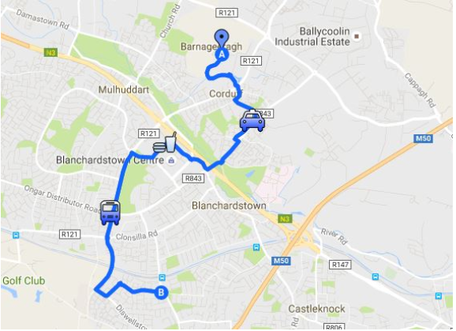
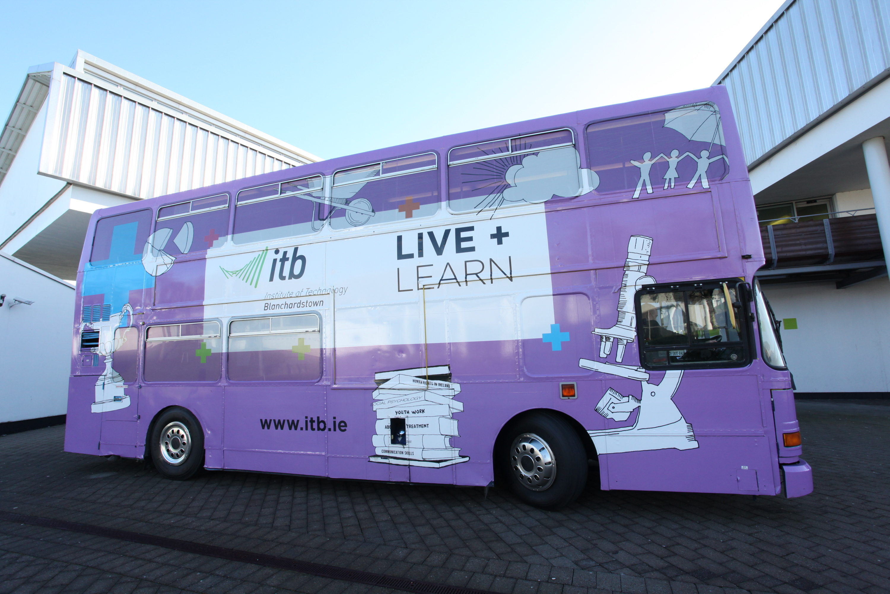
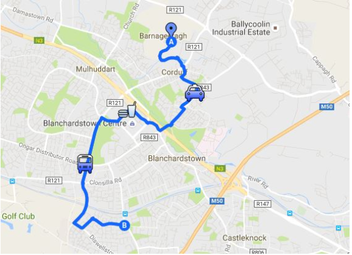
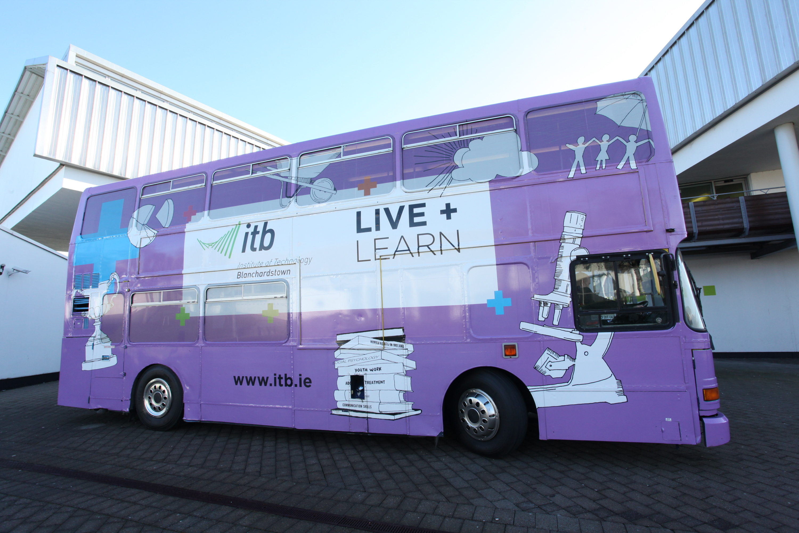

Travel
ITB Has been partnered with Smarter Travel Workplace since eary 2009 and offers a shuttle bus reducing cost of travel and a new bus route for students of the college. In 2014 a fully wrapped and designed ITB look was given to one of the buses on the fleet. This bus was unvailed by Minister for Transport, Tourism and Sport, Leo Varadkar